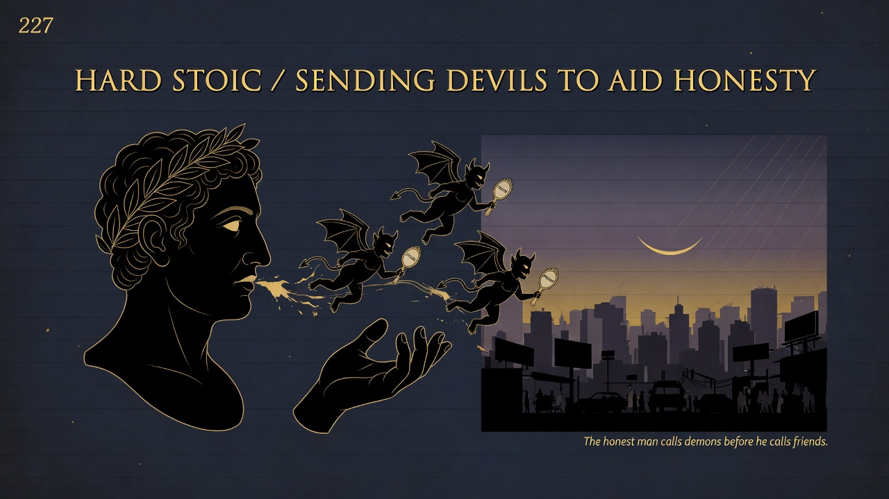
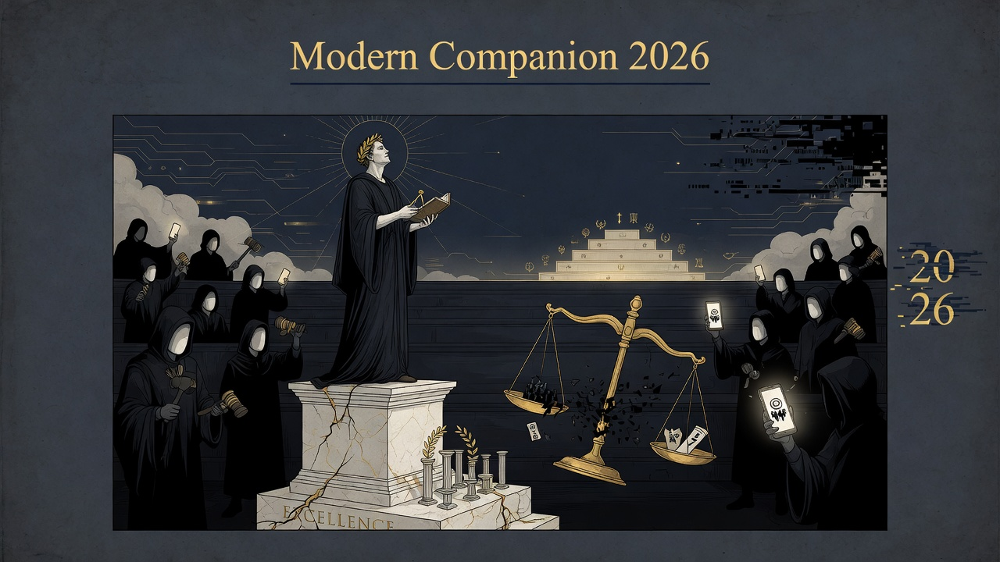

Honesty alone isn't enough—it can turn into another boring virtue or just performing vulnerability. The truly free person mixes honesty with toughness, humor, and edge so truth stays real and alive. Don't bore people (or yourself) with performative "authenticity."
Honesty without hardness and play becomes another form of piety or vanity. The free spirit arms it with every available spirit, including the “devils.”
Defines the positive virtue of the immoralist after all the unmaskings. Prepares the noble hardness of Part Nine.
2026 “authenticity” and radical honesty movements often become new pieties or performative weakness. The free spirit practices a harder, more playful honesty — armed with irony, adventure, and severity — so that truth-telling remains dangerous and life-affirming rather than another dull virtue or social currency. Life is too short to bore ourselves or others with our honesty.

